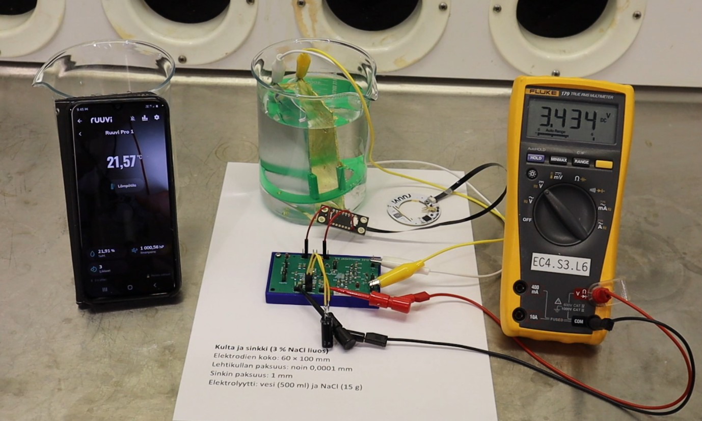
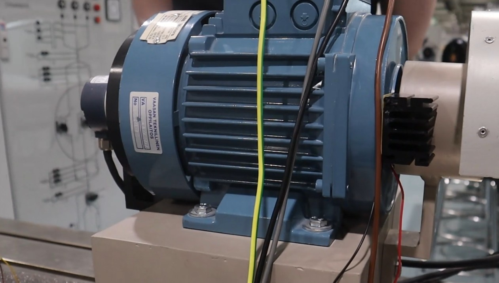
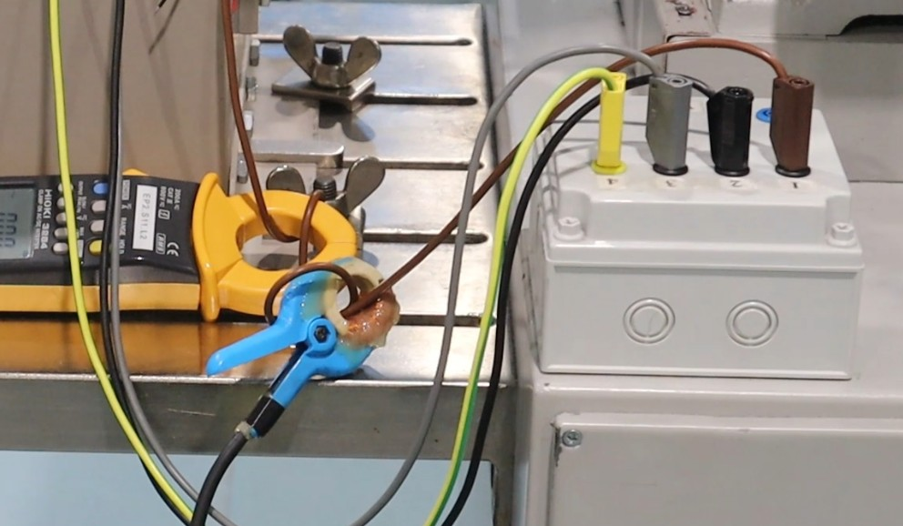
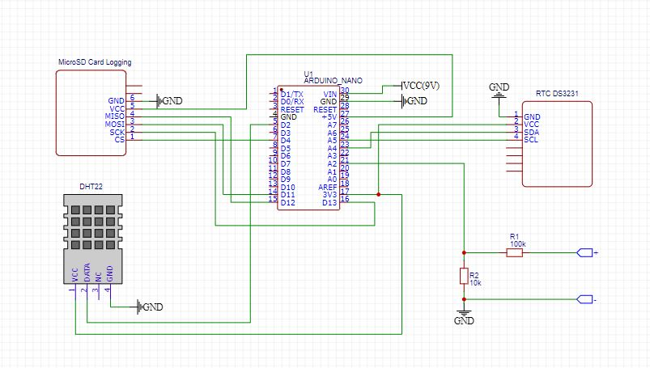
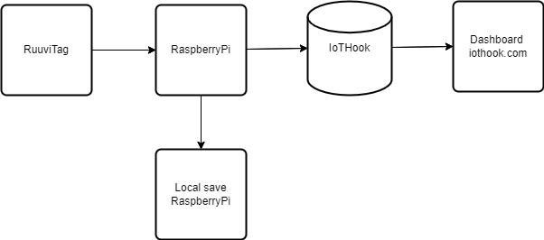
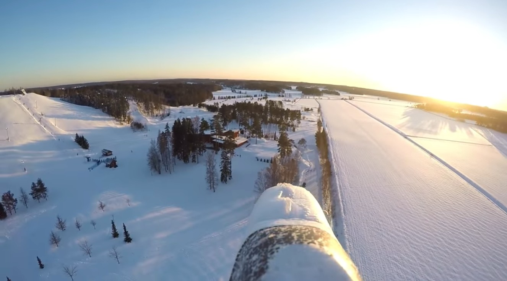
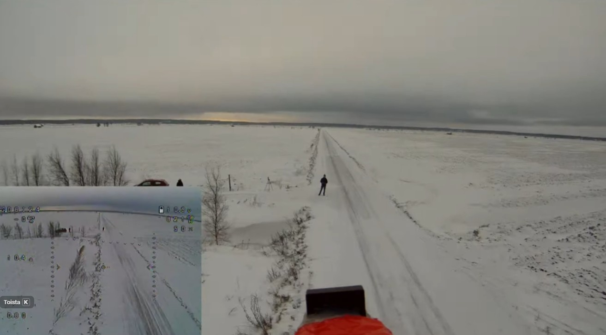

About
Embedded systems and sensor technology engineer focused on turning concepts into deployed, real-world systems. Experience in applied R&D and co-funded research projects, including consortium development and successful public–private funding initiatives.
Projects
Energy harvesting solutions for IoT devices
Developed energy harvesting solutions for IoT devices based on electrochemical, high voltage field, and thermoelectric phenomena.

Electric field energy harvesting
Investigation and implementation of high-voltage electric field energy harvesting principles for low-power IoT applications.


Electrochemical energy harvesting
Research and development of electrochemical energy harvesting methods for low-power systems operating in moisture-rich environments. The method is based on the galvanic series of metals.

Thermoelectric energy harvesting
Research and development of thermoelectric energy harvesting methods in environments with temperature gradients. This approach is based on the Seebeck effect in thermoelectric materials.

Inductive energy harvesting
Research and development of inductive energy harvesting methods from current-carrying wires using electromagnetic induction principles.

Measurement System
Designed a measurement system for energy harvesting prototypes, enabling accurate voltage and power monitoring with Arduino Nano, Raspberry Pi, and op-amp-based signal conditioning.


BLE + Raspberry Pi gateway
Built a Raspberry Pi gateway for forwarding RuuviTag (BLE sensor) data to the cloud using Python and MQTT.

Hobby Projects
Small-scale electronics and embedded systems projects involving microcontrollers, sensor experiments, and circuit prototyping. Focused on building and testing ideas that are not typically available as off-the-shelf products.
FPV Plane
Converted a commercial RC aircraft into a custom FPV platform by integrating a 5.8 GHz video transmission system and installing a Matek flight controller for FPV operation and on-screen display (OSD) telemetry.


Skills
Data Acquisition & Analysis
Python and MATLAB-based data pipelines for measurement analysis.
CAD modeling and 3D printing
Lots of ThinkerCad modeling and Ultimaker / Bambu Lab 3D printing.
Research project consortium building
Brought companies together, defined the project scope, and prepared co-funded research initiatives combining private industry funding and public funding.